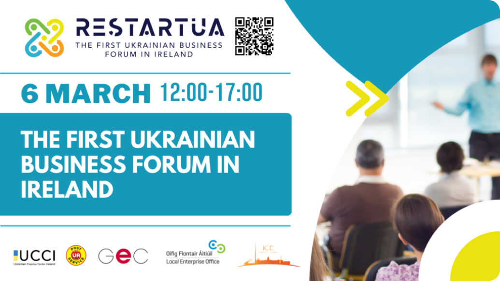

RESTARTUA
The first investment forum, “RE.Start.UA” – new opportunities for the Ukrainian-Irish business

Soon, on the 6th of March, the first investment forum for Ireland, “RE.Start.UA,” will be held. The uniqueness of this business forum lies in the fact that, within the framework of the event, both partners and investors can interact in all areas of doing business:
B2C (Business-to-Consumer)
mutually beneficial between organizations and
G2B (Government-to-Business)
mutually beneficial between government and business
B2G (Business-to-Government)
mutual support between business and power
C2C (Consumer-to-Consumer)
mutually supportive.
It is worthwhile for Irish businesses and businessmen to invest in Ukrainian startups, for the shoulders of the skin speaker in the forum “RESTART.UA,” which represents your business project, dozens of years to achieve a successful business in Ukraine.
And for the entrepreneurs, as if they had a good idea of their right – to know a business partner, share excellent knowledge, and get to know the capitalists and the brown business ideas of Ukrainian entrepreneurs.
The head organizer of the Invest Forum is the non-profit member organization Ukrainian Crisis Centre Ireland (UCCI). The main partners of the event are Guinness Enterprise Centre and UCCI Business Club.
– Mission investment forum “RE.Start.UA” – the rebranding of Ukraine in Ireland – because Ukrainian business borrows far from the rest of the world. For example, the largest trading partner of Ukraine (for the support of the Ministry of Economic Development of Ukraine), the European Union itself, a member of Ireland since 1973. Therefore, we will gladly create a comfortable mind for accepting investment decisions, facilitating dialogue, creating new business solutions, and increasing their value.
Thus, economically primed startups and business programs will represent Ukrainian quality, creativity, and excellence. Also, within the framework of the forum, you will pass the job market: potential working can get acquainted with the portfolio presentations and Ukrainian specialists’ resumes. To become a member of the forum, you need to fill in a particular form: